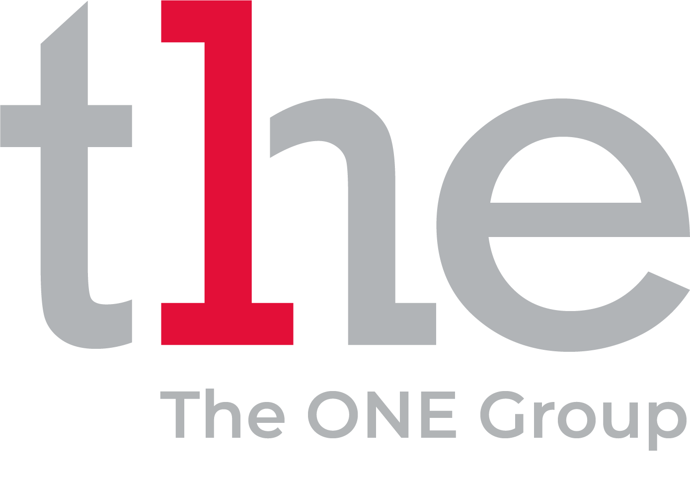

Confirm the work
Review the Oracle role, target system, security limits, and delivery date with your consultant and client owner.

The ONE Group already helps employers find people for technology roles. Elinext can add a delivery bench when a client cannot wait for the full hiring cycle.
Why we are here: we saw the Oracle Application Developer need. That usually means an enterprise system must keep moving while the market search is still open.
The Oracle signal tells us a client or internal team needs specialist enterprise work now. That is harder than filling a normal web role, because Oracle skills often sit inside old systems with strict data rules. If the search takes too long, project work can slow and consultants carry more pressure. Elinext can be the delivery layer while The ONE Group keeps the relationship and hiring process.
We would start with a four-week pilot, run by your client owner, with weekly demos and clear handover notes.
Review the Oracle role, target system, security limits, and delivery date with your consultant and client owner.
Assign vetted Oracle, Java, or .NET specialists who can join calls and start tickets within days.
Deliver fixes, APIs, reports, and tests in weekly batches, with notes your client team can keep.
Support the permanent hire with documented changes, test coverage, and a short transition plan.
HR and recruiting web platform built with a full team across frontend, backend, QA, design, DevOps, and PM.
Read case study
Enterprise web system work with Oracle, PL/SQL, C#, Angular, and several long-running delivery teams.
Read case studyShare one hard role. We will map the delivery bench.